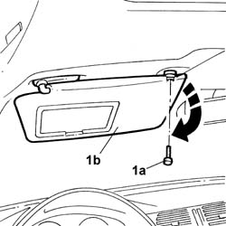
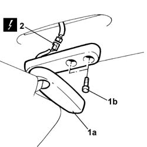

7065C34 SUN VISOR (one) left or right - R.R.
- Path
- Procedures > 70 FITTINGS > 7065 SEAT BELTS AND ACCESSORIES > 7065C ACCESSORIES AND DECORATIONS > 7065C34 SUN VISOR (one) left or right - R.R.
- Kind
- repair procedure (removal / refitting; the operation number is the code)
- Applies to
- all engines; all production periods
- Interactive page
- https://sloeber94.github.io/elrnDB-lThss/en/#/80783
Applies to: all engines; all production periods
 Removing
Removing
 Refitting
Refitting- Disconnect the negative battery terminal.
1. Undo the bolt (1a) and rotate the sun visor (1b) in the direction shown by the arrow.

Applies to: all engines; all production periods
1. Move the protection (1a) aside and loosen the bolts (1b) underneath.
2. Disconnect the electrical connector.
 | Description | Connector |
|---|---|---|
2 | Driver's sun visor light | G038 |
| Description | Connector |
|---|---|---|
2 | Passenger sun visor light | G039 |

Applies to: all engines; all production periods
Refitting
Removing- Connect the electrical connector.
| Description | Connector |
|---|---|---|
. | Driver's sun visor light | G038 |
| Description | Connector |
|---|---|---|
. | Passenger sun visor light | G039 |
- Position the sun visor and tighten the fixing bolts.
- Fit the plastic protection for the fixing bolts.
- Connect the negative battery terminal.
Topics that link to this page (9)
- 5505C41 PASSENGER COMPARTMENT built in WIRING - R.R.
- 5580C50 Head Bag module (one), left or right - R.R.
- 7030B12 SUN ROOF (assembly) - R.R.
- 7030B46 DRIVE CABLE (one), left or right - R.R.
- 7030B52 Sun roof glass support JOINTS/SLIDES - R.R.
- 7030B54 SUN ROOF (assembly) - Alignment and Positioning
- 7030B70 Sun roof movement MOTOR - R.R.
- 7040E56 Support for front MODULAR COURTESY LIGHT UNIT - R.R. with courtesy light removed
- 7040H16 Roof LINING for versions with sun roof - R.R.